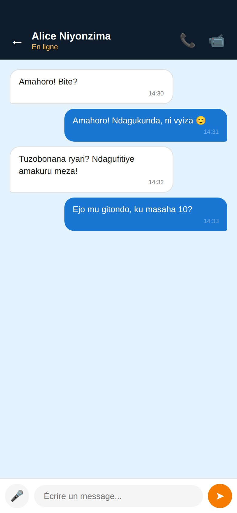

Buchat est l'appli de messagerie locale du Burundi. Chat, messages vocaux, appels audio et vidéo — vos conversations ne quittent jamais le pays.

Conversations 1-à-1 et groupes illimités.
Enregistrez et envoyez en un seul appui.
Qualité HD via WebRTC P2P.
Appels face-à-face en haute définition.
Voyez qui est disponible en temps réel.
Aucun message sauvegardé, aucune pub, aucun pistage.
Disponible sur toutes vos plateformes. Aucun compte App Store ou Play Store requis.
Version Web Progressive — fonctionne dans Safari.
Fichier APK — installation directe.
Installateur .exe — double-clic pour installer.
Buchat-Setup.exeImage disque .dmg — glissez dans Applications.
Buchat.dmgAppImage portable — aucune installation.
Buchat.AppImagechmod +xAucune installation — ouvrez et discutez.
Contrairement aux messageries étrangères, Buchat héberge toutes ses infrastructures à Bujumbura. Vos messages transitent par notre serveur local sans jamais quitter le pays, et ne sont stockés nulle part — ni chez nous, ni chez un GAFAM.
Buchat est développé par Buja Online, une entreprise burundaise qui croit que la technologie doit servir les Burundais d'abord.